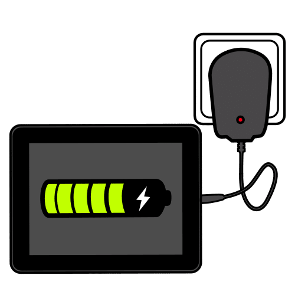
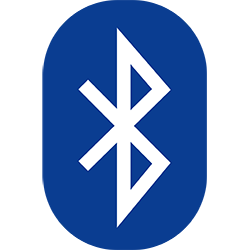
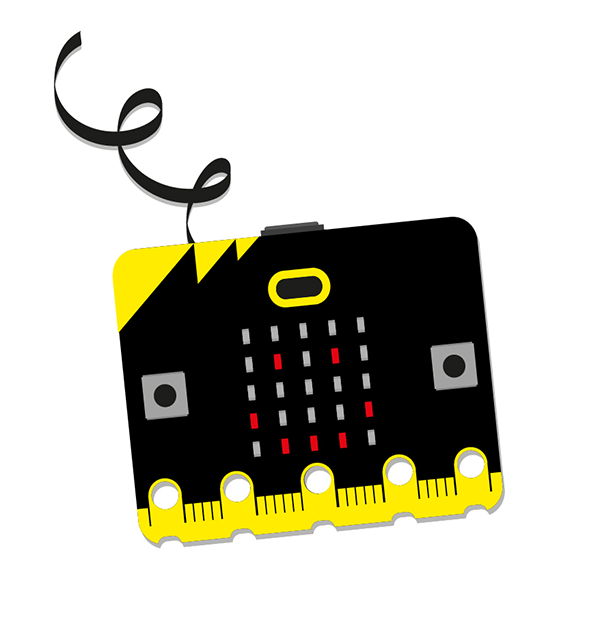

Diccionario
Alimentación

Conectividad



Imagina que vas a diseñar la placa robótica con la que vamos a trabajar en clase.
Para saber qué elementos podría llevar la placa echa un vistazo a esta tabla y elige los que quieras:
| Sensores | Actuadores |
| Pulsadores | LEDs |
| Sensor de temperatura | Altavoz |
| Sensor de luz | Motores |
| Acelerómetro | |
| Joystick | |
| Micrófono |
Definición:
Componentes que permiten que el aparato se cargue de electricidad.
Ejemplo:
La placa tiene un conector de alimentación de 5 V.
Definición:
Capacidad para conectarse o hacer conexiones y transmitir o recibir información.
Ejemplo:
La placa robótica tiene conectividad vía Bluetooth.
Aquí cuentas con un listado de otros componentes que podrían ser necesarios:


Después del accidente sufrido por nuestro robot esto es lo que ha quedado de él.
En las siguientes actividades vamos a identificar sus componentes, ¿te animas?
Por parejas cogemos una placa microcontroladora que os dará vuestro profesor o profesora
Explora la placa y trata de identificar sus componentes.
Pasos a realizar:
Pon en común con tu grupo cuáles son los componentes que tiene la placa en la cara frontal.
¡Vamos a comprobarlo! Cuando terminéis de decir los componentes que habéis identificado, id pulsando la siguiente imagen interactiva para comprobar si habéis acertado.
Corrige el dibujo de la placa que hiciste ayudándote de la imagen interactiva.
Aquí tienes la imagen con los componentes de la cara frontal.
Pon en común con tu grupo cuáles son los componentes que tiene la placa en la cara trasera.
¡Vamos a comprobarlo! Cuando terminéis de decir los componentes que habéis identificado, id pulsando la siguiente imagen interactiva para comprobar si habéis acertado.
Corrige el dibujo de la placa que hiciste ayudándote de la imagen interactiva.
Aquí tienes la imagen con los componentes de la cara trasera.
El modelo de nuestra placa robótica es micro:bit, puedes encontrar mucha información sobre ella en su página oficial microbit.org
Obra publicada con Licencia Creative Commons Reconocimiento Compartir igual 4.0